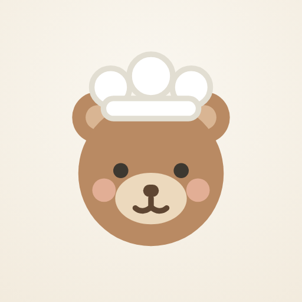

곰곰이 아이콘 비교 🐻
폰마다 네모/동그라미로 잘리니 · 작은 크기까지 같이 봐요
A · 곰 크게
네모 폰
동그라미 폰
곰이 꽉 차서 존재감 최고
단, 동그라미 폰에선 모자·귀 끝이 살짝 잘릴 수 있음
단, 동그라미 폰에선 모자·귀 끝이 살짝 잘릴 수 있음
B · 여백 넉넉

네모 폰
동그라미 폰
어떤 모양으로 잘려도 곰이 안전
대신 곰이 한 뼘 작아 보임
대신 곰이 한 뼘 작아 보임